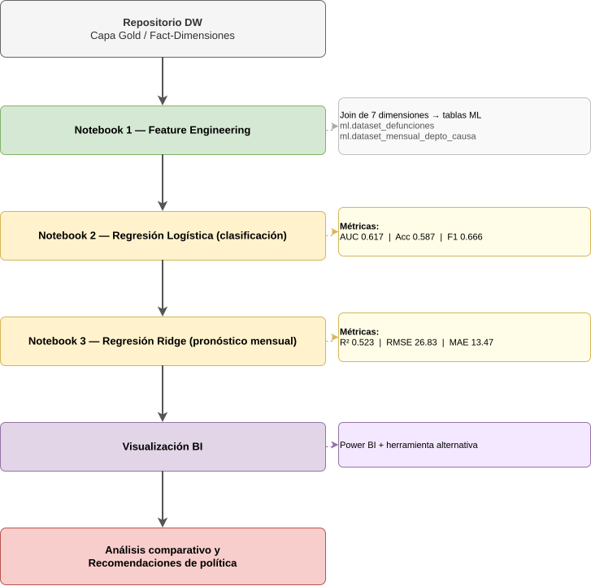

Inteligencia Analítica¶
Visión General¶
La tercera y última fase de la plataforma cierra el ciclo end-to-end: sobre el repositorio analítico construido en las fases anteriores se aplican técnicas de aprendizaje automático para generar evidencia cuantitativa, y los resultados se exponen mediante visualizaciones interactivas en dos herramientas de BI distintas, demostrando interoperabilidad real entre plataformas.
Objetivo de la fase
Aplicar Machine Learning al problema de mortalidad pre/post-COVID, producir visualizaciones analíticas en Power BI y una segunda herramienta, y derivar recomendaciones de política pública basadas en evidencia que el cliente (PNUD/MSPAS) pueda llevar a acción.
Alcance¶
| Componente | Descripción |
|---|---|
| Feature Engineering | Join de las 7 dimensiones del esquema estrella en tablas planas listas para entrenar |
| Modelo de clasificación | Regresión Logística que predice si una defunción ocurrió en el período pre-COVID o post-COVID |
| Modelo de pronóstico | Regresión Ridge (L2) que estima el conteo mensual de defunciones por departamento y capítulo CIE-10 |
| Plataforma de entrenamiento | Databricks Serverless + MLflow para trazabilidad de experimentos |
| Visualización BI | 2 dashboards en Power BI (Power Query + DAX) + 2 en herramienta alternativa |
| Análisis comparativo | Pre-COVID (2015–2019) vs. Post-COVID (2020–2024) |
| Recomendaciones | Cuatro recomendaciones de política pública derivadas del análisis |
Flujo de la Fase¶

Navegación de esta Sección¶
- Modelo de ML: Decisiones técnicas, código, métricas y hallazgos de ambos modelos.
- Visualización e Interoperabilidad BI: Dashboards en Power BI y herramienta alternativa.
- Análisis y Recomendaciones: Comparativa pre/post-COVID y recomendaciones de política.
- Entregables y Criterios: Lista de entregables, criterios de aceptación y rúbrica de evaluación.
Regla de Completitud End-to-End¶
Flujo completo vigente
En toda demostración de esta fase se ejecuta el recorrido completo origen → ingesta → Sandbox → Stage → Data Warehouse → ML → BI. Una fase no se da por aprobada si la tubería previa dejó de funcionar.
Todos los cuadernos de entrenamiento están versionados en GitHub. Los pesos se empaquetan como artefacto JSON liviano en /Volumes/workspace/ml/modelos/. Cada ejecución queda registrada en ml.ml_control_log con marca de tiempo, filas procesadas y métricas, siguiendo el mismo patrón de auditoría de dw.etl_control_log de la Fase 2.